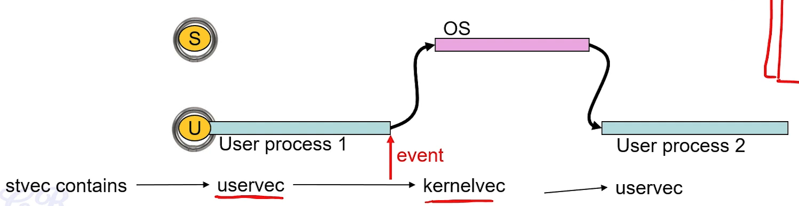
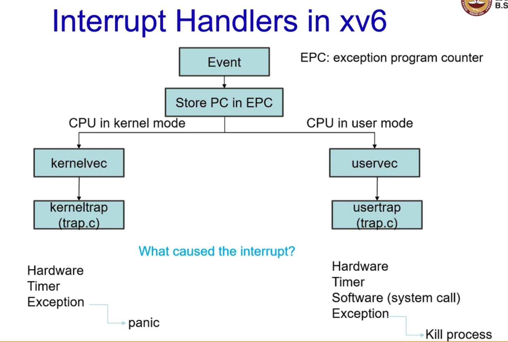
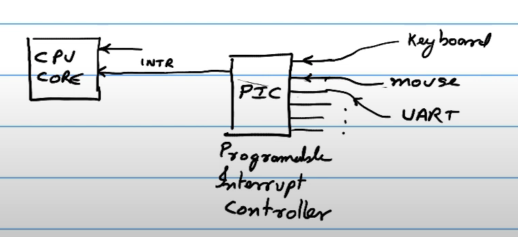
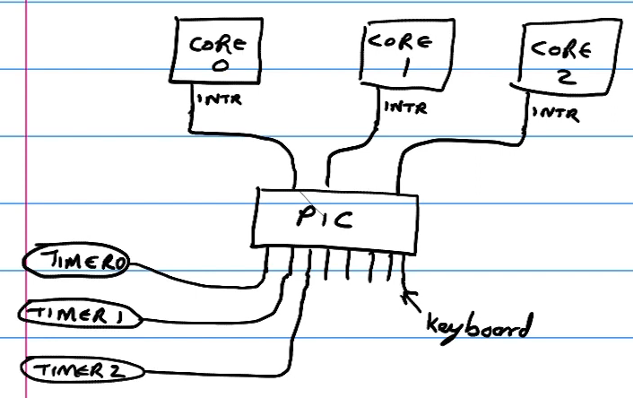
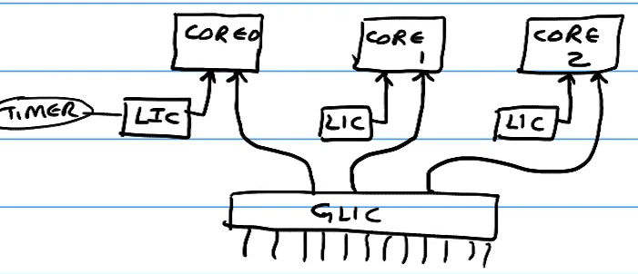
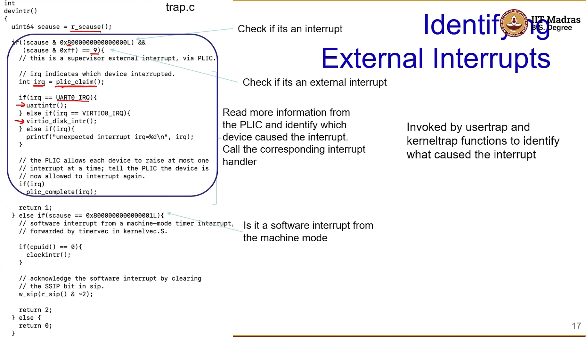

The processor has a reset pin. When it receives a signal, the OS starts to boot in machine mode then goes into supervisor mode and creates a user process and switches to that.
Once a user processes starts executing, the OS which is in supervisor mode only executes when some event occurs ⇒ OS EXECUTES ONLY WHEN EVENTS OCCUR.
When the process is executing, there may be an interrupt. First the OS needs identify whether it is a software/hardware interrupt or an exception. Upon correct identification, the correct handler is processed and this shifts the processor back from the user mode to the supervisor mode and permits the OS to execute. The OS services this interrupt, executes certain functions as is required for this particular interrupt and then goes back into the user mode and the user mode process continues to execute.
Software interrupts: System calls like ecall
Hardware interrupts: Triggered by external devices (keyboard, mouse click, timer)
Exceptions: Page fault, divide by 0, illegal instruction
In order to identify the cause of the interrupt, the processor maintains a cause register. The Interrupt Pending register (whether an interrupt is pending to be serviced) and the Interrupt Enable register (enable/disable interrupts).
The reason why OS is event driven is because OS cannot trust user processes as they may be buggy or crash which should not affect the OS. Moreover it needs to be fair and not let any one process hog CPU.
We have different interrupts for different modes. These can be enabled/disabled globally by setting the MIE (machine mode interrupts) bit and SIE (supervisor mode interrupts) bit in the mstatus register appropriately.
The MPP(2 bits) and SPP(1 bit) hold the previous mode before the interrupt. There are three possible ways an interrupt could occur so that an event needs to be serviced in the machine mode. It can occur from user mode, supervisor mode, or machine mode. Therefore MPP requires 2 bits. Whereas an interrupt could occur from user mode or supervisor model in order to be serviced in the supervisor mode. Therefore SPP requires 1 bit.
Machine mode and supervisor mode each have their own interrupt pending and interrupt enable registers.
When an event occurs while the processor switches from the user mode to supervisor mode, it looks into the stvec register and loads it into supervisor mode. The stvec register contains the interrupt routine. 
uservec is used to handle interrupts when in user address space. The reason uservec is executed is because the register stvec contains uservec. Now uservec invokes kernelvec and in this way interrupts are serviced. uservec changes the context from user VA to kernel VA and eventually cause the usertrap to execute. The scause register holds information indicating the case of the interrupt. The usertrap will look into scause register to find the cause of the event. 
Suppose a user process is running and an event gets triggered. This would cause the hardware to store the PC in EPC register. From here it would either move to uservec function or the kernelvec function. This choice of uservec/kernelvec depends on the previous mode of operation. If previous mode was usermode ⇒ uservec is executed. If it is in kernelmode then stvec is configured so as to point to kernelvec and is thus executed.
Once in kerneltrap or usertrap we need to identify what caused the interrupt. An exception in the usermode simply kills the process whereas in kernel mode causes a panic. Since a system call cannot occur in the kernel mode, a software interrupt is not possible in the kernel mode.
§6.3: Hardware Interrupts
Hardware interrupts are events that get triggered by external devices. However we may have multiple devices (mouse, keyboard, etc) that may want to communicate with the CPU. So how do we handle multiple such devices? 
This is done using a programmable interrupt controller which is connected to the CPU through the interrupt line. The PIC has different input lines to take in hardware inputs. One interrupt line is multiplexed using the PIC.
However the CPU does not know which external device has caused the interrupt. It only knows that an external device has triggered it (recall scause register). Therefore the CPU queries the PIC and identifies which input raised the interrupt. 
In a multi-core setup, the PIC also has to decide which core to forward the interrupt. However some interrupts are needed for a particular core (for eg timer). One way to handle this that each core has its own timer and each timer is forwarded according. 
In modern architectures we now have local interrupt controller for each core and a global interrupt controller that is shared across all cores.
Interrupts which are dedicated to specific controllers such as the timer are connected to the LIC whilst others are routed through GLIC.
In RISC V, with multiple cores, a local interrupt controller (CLINT) is shared across all cores and then we have a platform level interrupt controller (PLIC). The CLINT generates different timer interrupts independently for each core (hart) while the keyboard, mouse etc are connected to PLIC.
In the case of a hardware interrupt, the trap.c invokes devintr which looks into PLIC and finds which device invoked the interrupt. 
§6.4: Handling Hardware Interrupts
Typical interrupt handlers work as a software and the time taken to handle an interrupt is critical.
The software first saves additional CPU context including saving the PC in the EPC register.
It then processes the interrupt by loading the STVEC into the PC.
Then it invokes the OS/Kernel scheduler
Finally it restores the CPU context and returns
The time taken when the interrupt occurs to the point where the interrupt handler executes is called the interrupt latency.
RTOS requires guarantees wrt to the latency
Min latency is due to the PLIC/controller to channel to the core
The max latency is due to the OS. Occurs when the handler cannot be serviced immediately. For example if a certain set of instructions have to be executed together (atomic operations), in that case one has to wait for it to finish its execution before the interrupt could be serviced.
Linux interrupt handlers are designed in such a way that the main handler is as small as possible. It splits the entire handling into two parts. This causes less chances of nested interrupts and reduces latencies.
The Top Half: does the minimum work and is executed as soon as an interrupt is executed. It saves registers, unmasks others interrupts and restores registers and returns to the previous context.
The Bottom Half: deferred processing, communicating with the devices, setting memory, etc - can be interrupted.
§6.5: Timer Interrupts
Periodically the timer completes counting and through the CLINT results in an interrupt. The CPU uses this interrupt to perform a context switch.
Suppose a process is executing, after a fixed amount of time the timer will interrupt. The CPU will go into supervisor mode and invoke the scheduler and perform a context switch to a different process.
mtime is a 64 bit register which is incremented at a constant frequency (every clock pulse). mtimecmp is a 64 bit register that is used to compare with mtime every clock pulse. if(mtime > mtimecmp) ⇒ interrupt
Note that supervisor mode cannot configure timer. Only machine mode can. Therefore when a timer interrupt occurs, we move to machine mode and
Reprogram mtimecmp register
trigger a software interrupt in order to move to the supervisor mode.
In xv6, 1 mtime is created for all cores but each core has a different mtimecmp
§6.6: Context Switching
Note that each process has their own VA with their top parts consisting of the trampoline and the trapframe. A kernels has its own VA. In a context switch we need to move from P1’s VA to P2’s VA using the scheduling algorithm.
Context saves registers and permits to continue executing at a later time by reloading registers.
Suppose P1 is executing and a timer interrupt occurs. This interrupt is in machine mode which is forwarded to the supervisor mode as a software interrupt.
The PC holds the value of stvec which holds uservec. uservec saves all registers corresponding to the user space in the trapframe.
The usertrap identifies cause of the interrupt. If it is happens to be a timer interrupt it invokes yield.
The yield function sets P1 to runnable and invokes sched.
After performing some sanity checks the sched function switches from the context of P1 to the context of scheduler.
The scheduler then invokes the switch function to change the context from scheduler to P2.
This time that it takes to switch from the context of P1 to P2 is called the context switch time.
{kind=link}
{kind=link}
{kind=link}
{kind=link}
{kind=link}
{kind=link}
{kind=link}
{kind=link}
{kind=link}
{kind=link}